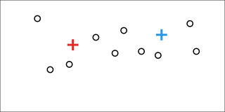

Classification 3d multispectrale
Emile Blettery, Emmanuel BOURASSIN,
Guillemette FONTEIX
Projet encadré par Marc POUPÉE - février-mai 2018
Algorithme des k-means
Exemple avec 2 classes
Animation expliquant pas à pas avec un exemple simple le fonctionnement de l'algorithme de classification non supervisée des k-means.
Choix aléatoire des centroïdes de classe initiaux
Association à la classe la plus proche
Calcul du nouveau centroïde de chaque classe
Réinitialisation des classes
Association à la classe la plus proche
Calcul du nouveau centroïde de chaque classe
Réinitialisation des classes
Association à la classe la plus proche
Calcul du nouveau centroïde de chaque classe
Réinitialisation des classes

Association à la classe la plus proche

Condition d'arrêt
L'algorithme peut fonctionner pour un nombre donné d'itérations ou bien s'arrêter lorsque la classification converge.
> Retour à la présentation